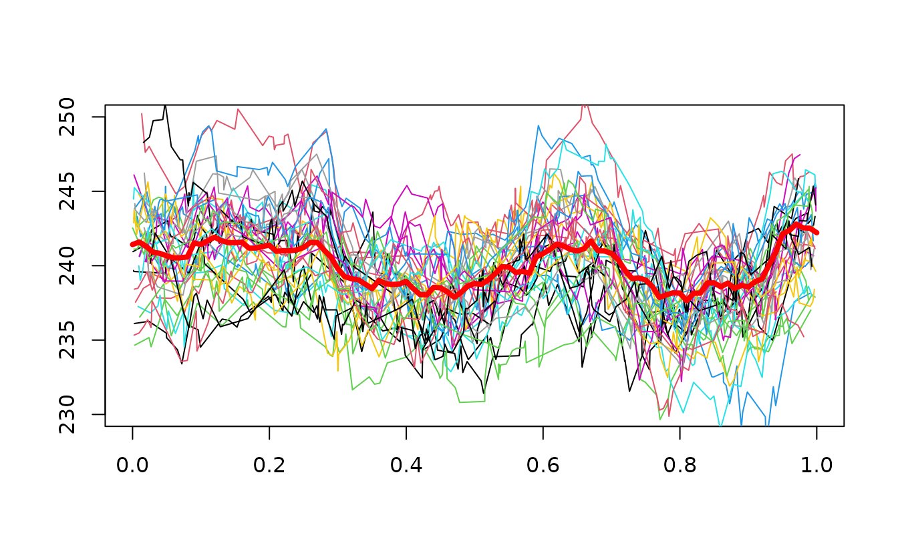
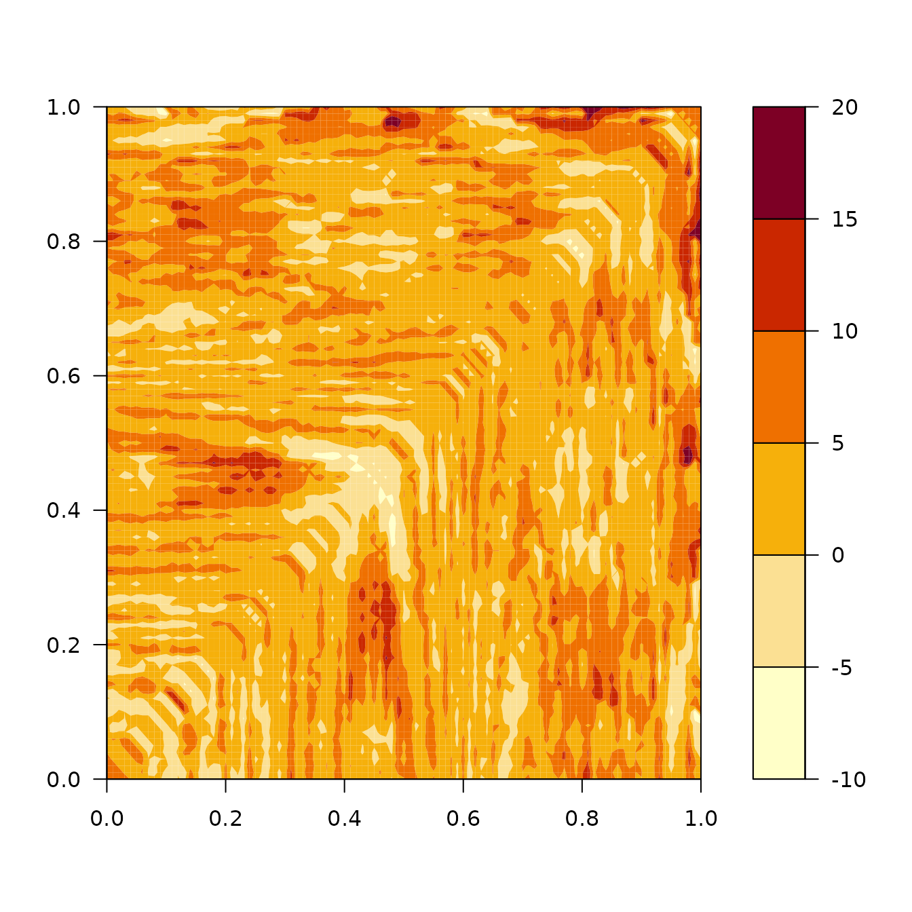

In this vignette, we will show how to estimate the mean and covariance functions of a functional dataset. For this example, we will use simulated data using the package simulater.
# Load the packages
library(funestim)
#>
#> Attaching package: 'funestim'
#> The following object is masked from 'package:stats':
#>
#> kernel
library(simulater)First, we will generate some data.
mu <- learn_mean(powerconsumption)
cov <- learn_covariance(powerconsumption)
noise <- learn_noise(powerconsumption)
X <- generate_data(100, 100, mu, cov, noise, exp(-5.5), 0.2, 1)We perform an estimation of the mean curve.
obs_points <- seq(0, 1, length.out = 101) # Estimation grid mean
band_points <- seq(0.05, 0.95, length.out = 50) # Estimation grid regularity
mean_curve <- mean_ll(X, U = obs_points, t0_list = band_points)
We perform an estimation of the covariance surface.
obs_points <- seq(0, 1, length.out = 101) # Estimation grid mean
band_points <- seq(0.05, 0.95, length.out = 10) # Estimation grid regularity
cov_our <- covariance_ll(X, U = obs_points, t0_list = band_points,
centered = FALSE)